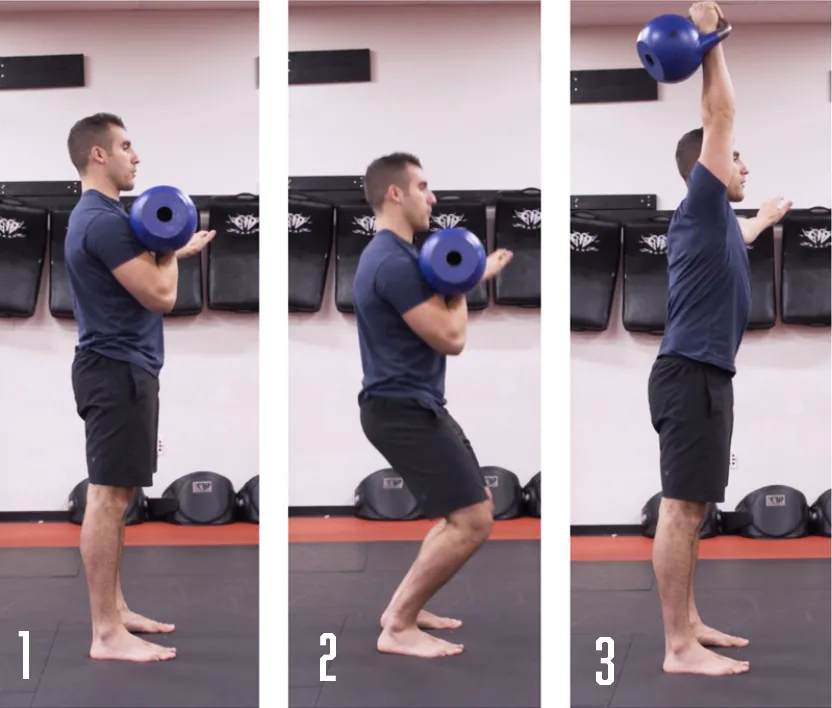
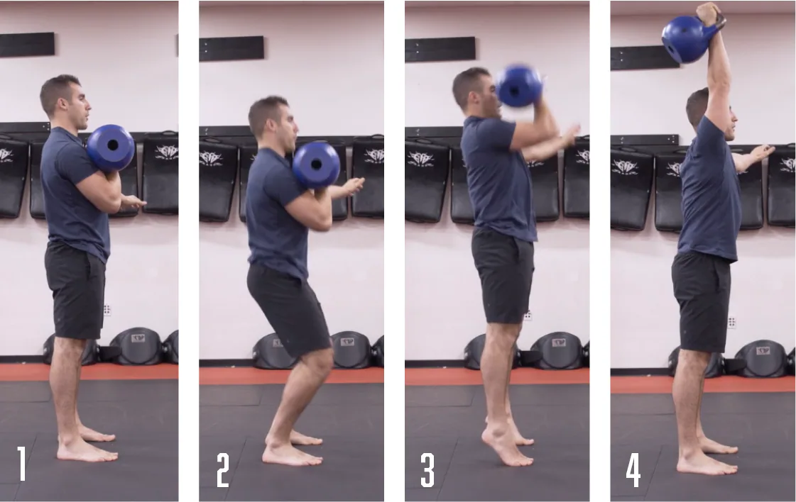

B91 · Push Pressing Your Way to the Top
Hi {first_name},
Today we’ll be going into a step-by-step “how-to” on this movement, along with a few tips.
When first learning, I like to break it up into two variations.
Variation One Heels Remain Down

This first classic Push Press Variation is quite simple. As you dip and drive with the legs to propel the kettlebell upward, your heels will remain down the entire time. This tends to be good for people who are new to the movement entirely and are making their first progression from the Standing Strict Overhead Press, into this more dynamic and full body movement .
Variation Two Heels Rise

This second, more advanced variation requires even more total body integration, timing, power, and coordination. One thing to notice on this version is that you’ll be coming up powerfully onto the balls of the feet. This will involve more movement to take place around the ankles, forcing the calves to assist to a greater degree in the force generation sequence.
Let’s now break down the steps of this type of Push Press (version two):
Additional Tips
Toss either Push Press variation one or two into your training and work on the details discussed above and I guarantee you’ll become a more functional overhead athlete as a result : )
Stay strong my friend, Mike
P.S. Next week we’ll head into discussing 3 simple things you can do to improve the effectiveness of your stretches.
P.P.S. Check me out on Instagram @Mike.Salemi where I give more helpful information on wellness and performance throughout the week. You might even catch some tips on my Story on how to create the perfect espresso shot ; ) |